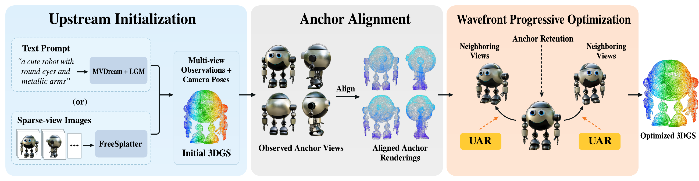
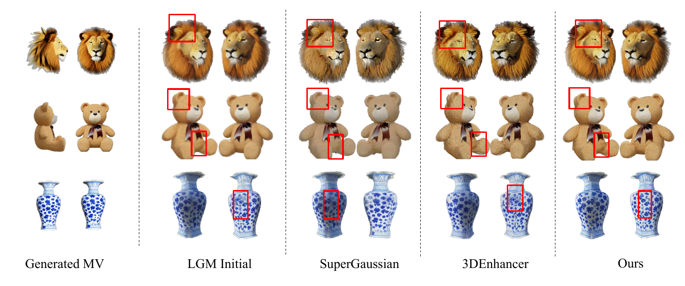
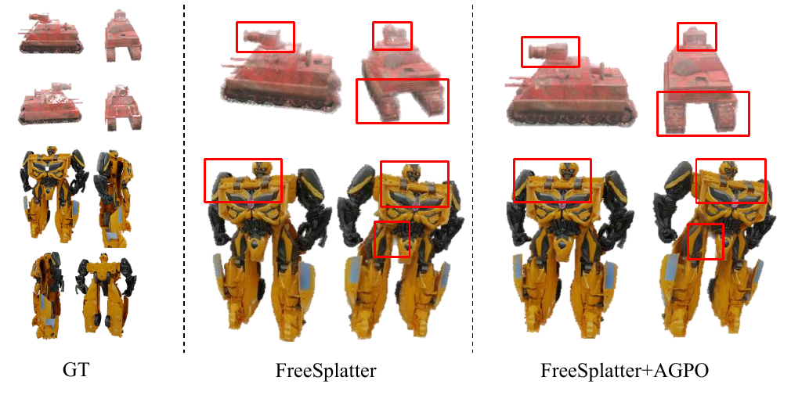

Framework overview

Abstract
Recent advances in 3D generation and reconstruction enable the efficient construction of 3D Gaussian representations from multi-view observations. Nevertheless, imperfect observations and reconstruction errors often leave degraded details, geometric artifacts, and unstable cross-view appearance in the resulting representations. We propose Anchor-Guided Progressive Optimization (AGPO), a lightweight, training-free framework for enhancing initialized 3D Gaussian representations. Rather than treating supervision from different viewpoints as isolated constraints, AGPO organizes the available observations as anchor-guided supervision and exploits inter-view geometry to extend reliable structural and appearance information toward under-constrained regions. Depth-guided reprojection establishes explicit correspondences between neighboring viewpoints, while deterministic wavefront propagation carries the resulting supervision across the view space. Throughout propagation, an anchor retention constraint preserves fidelity at directly observed viewpoints. Meanwhile, an Uncertainty-Aware Reweighting (UAR) mechanism adaptively adjusts pixel-level supervision based on depth consistency, effectively suppressing artifacts in occluded or uncertain regions. Experiments in both text-conditioned 3D generation and multi-view reconstruction settings demonstrate the effectiveness of AGPO. On the T3 Bench Single Object benchmark, AGPO increases the T3 Bench Overall score of the initial representation from 46.84 to 52.68 and reduces the reprojection mean squared error from 0.929 × 10−3 to 0.736 × 10−3. Consistent improvements on FreeSplatter-initialized representations further demonstrate its generalization across different initialization strategies.
Method
Progressive propagation
Uncertainty-aware reweighting
Results
Text-to-3D generation enhancement


Sparse-view reconstruction enhancement

